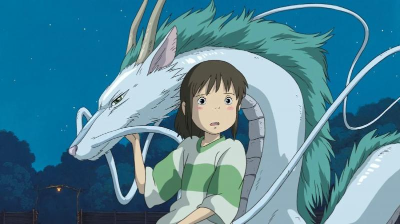
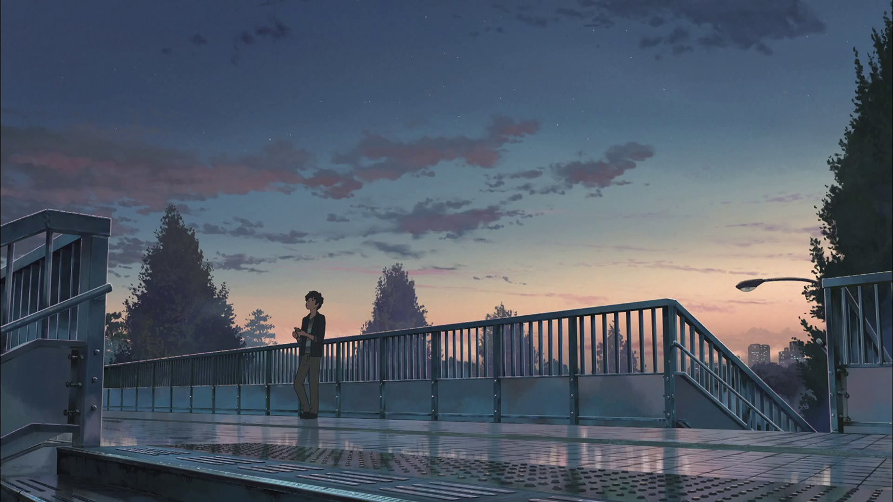
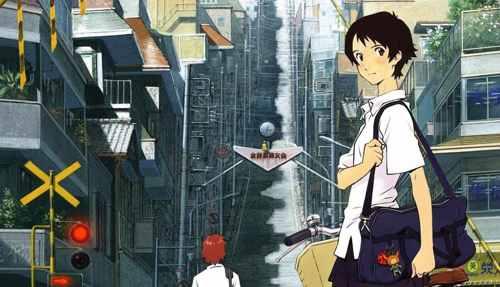
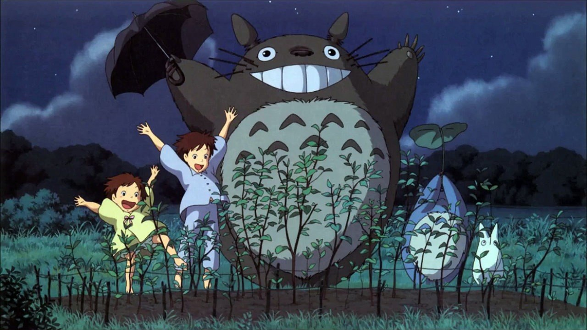
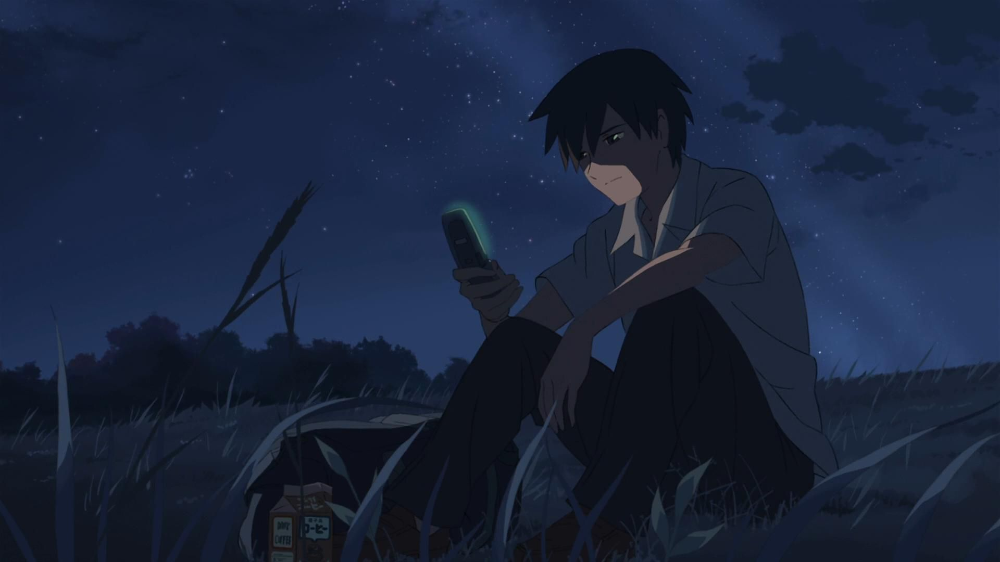
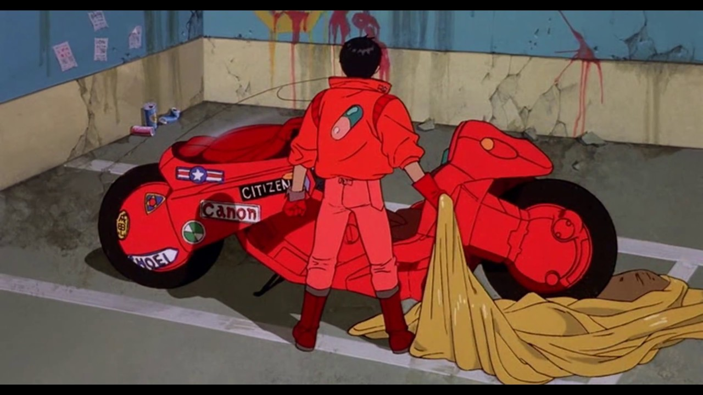
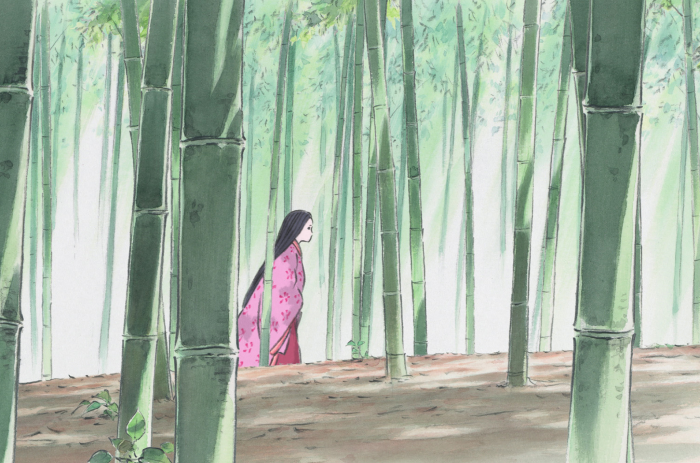
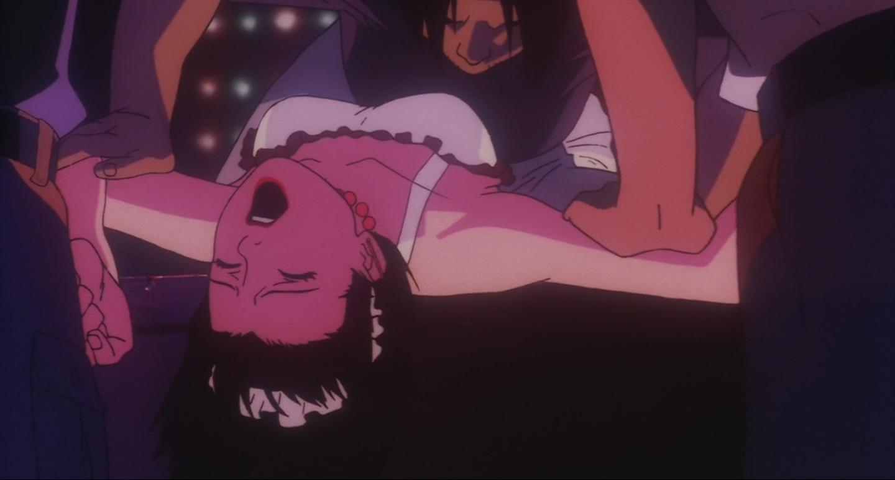
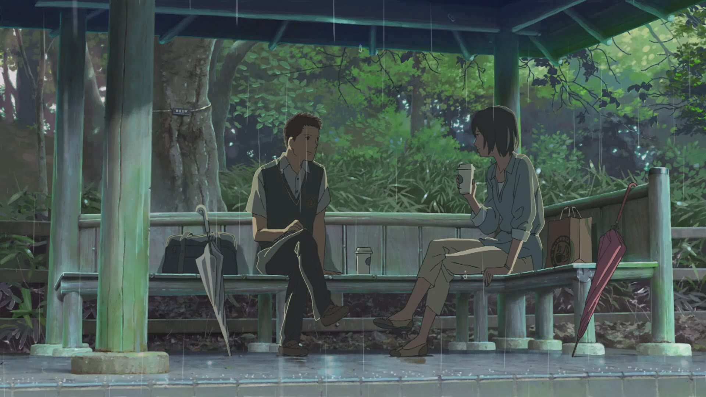
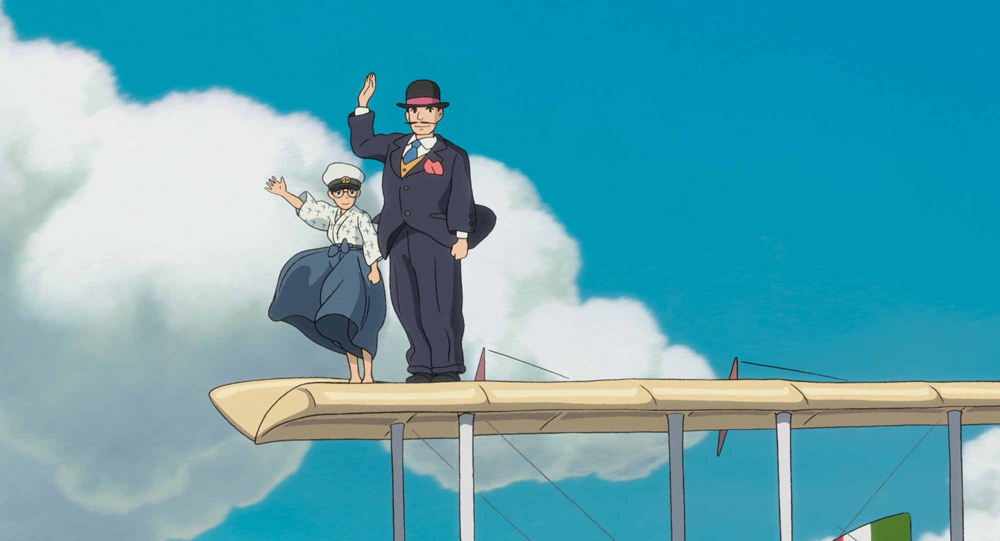

CARTOON
10 แอนิเมชั่นญี่ปุ่นที่ไม่ควรพลาด, Sep 2, 2019
การ์ตูน
เชื่อว่าหลายคนที่ชอบดูการ์ตูนหรือแอนิเมชั่นคงเคยโดนเพื่อน ๆ หรือคนรอบข้างเหน็บแนมกันมาบ้างว่า “โตป่านนี้แล้วยังดูการ์ตูนอยู่อีกเหรอ” และก็ไม่รู้จะตอบโต้กลับไปยังไง เราจึงขออาสามาช่วยแก้ปัญหานี้ ต่อจากนี้ถ้าเพื่อน ๆ คนไหนโดนเหน็บแนมแบบนี้อีก ให้ส่งบทความนี้ไปให้อ่านเลย เพราะนี่คือ 10 แอนิเมชั่นญี่ปุ่นที่ไม่ควรพลาด
เรื่องที่ 1 Spirited Away (2001)
นี่คือแอนิเมชั่นจากญี่ปุ่นเรื่องเดียวที่สามารถคว้ารางวัลภาพยนตร์แอนิเมชั่นยอดเยี่ยมจากเวทีที่ยิ่งใหญ่ที่สุดในโลกอย่างออสการ์ได้ เพราะฉะนั้นเรื่องความยอดเยี่ยมของมันคงไม่ต้องพูดถึง Spirited Away แอนิเมชั่นความยาว 125 นาที จากสตูดิโอชื่อดังที่ใครหลายคนน่าจะรู้จักอย่าง Studio Ghibli ผลงานการกำกับของ Hayao Miyazaki ‘บิดาแห่งแอนิเมชั่นญี่ปุ่น’
เรื่องที่ 2 Your Name (2016)
ในระยะหลังมีแอนิเมชั่นญี่ปุ่นเข้าฉายในโรงภาพยนตร์บ้านเราเยอะกว่าเมื่อก่อนอย่างเห็นได้ชัด Your Name อาจจะเป็น 1 ในสาเหตุของกระแสนิยมนี้ เพราะในตอนที่ Your Name เข้าฉายนั้น มันได้รับความนิยมแบบเกินความคาดหมาย ไม่เคยมีแอนิเมชั่นจากญี่ปุ่นเรื่องไหนเคยทำได้แบบนี้มาก่อน เป็นปรากฎการณ์ซึ่งเป็นใบเบิกทางให้กับแอนิเมชั่นจากญี่ปุ่นเรื่องหลัง ๆ
Your Name ผลงานของ Makoto Shinkai อีกหนึ่งเจ้าพ่อในวงการแอนิเมชั่นญี่ปุ่น เล่าเรื่องราวของเด็กมัธยมปลายหนุ่มสาวคู่หนึ่งที่สามารถสลับร่างกันได้ แต่เมื่อพวกเขากลับคืนร่างเดิมกลับไม่สามารถจำชื่อของอีกฝ่ายได้ จึงเกิดเป็นการผจญภัยเพื่อตามหาว่าเขาหรือเธอคนนั้นเป็นใครกันแน่ ต้องบอกว่า Your Name เป็นแอนิเมชั่นที่เด็กดูได้ผู้ใหญ่ดูดี เนื่องจากเนื้อหาค่อนข้างทำความเข้าใจง่ายเหมาะกับทุกเพศทุกวัย แต่ก่อนจะดูเตรียมผ้าเช็ดหน้าไว้ให้ดีล่ะ เพราะถ้าใครใจไม่แข็งพอรับรองว่าน้ำตาอาบแก้มแน่นอน
เรื่องที่ 3 The Girl Who Leapt Through Time (2006)
The Girl Who Leapt Through Time เป็นเรื่องราวของเด็กสาวมัธยมปลายนามว่ามาโกโตะ ซึ่งเพราะอุบัติเหตุที่เกือบจะคร่าชีวิตของเธอไปทำให้เธอค้นพบว่าตัวเองสามารถย้อนเวลากลับไปในอดีตได้ และด้วยความเป็นเด็กเธอจึงย้อนเวลากลับไปแก้ไขสิ่งต่าง ๆ โดยไม่คิดให้รอบคอบ ทั้งเรื่องความรัก การเรียน และเรื่องอื่น ๆ โดยไม่ได้ตระหนักว่าจะเกิดความสูญเสียตามมาแค่ไหน ถึงแม้ว่าเนื้อหาจะดูเป็นแอนเมชั่นวัยรุ่นทั่วไป แต่ขอบอกเลยว่าข้อความที่ The Girl Who Leapt Through Time ต้องการจะสื่อสารมายังคนดูนั้นเป็นคติเตือนใจได้กับทุกเพศทุกวัยเลยทีเดียว
เรื่องที่ 4 My Neighbor Totoro (1988)
น้องงงงง~ หลายคนคงคุ้นตากับเจ้าตัวอ้วน ๆ กลม ๆ ขน ๆ ซึ่งเป็นสัญลักษณ์ของ Studio Ghibli แต่อาจจะยังไม่รู้ว่าที่มาของมันมาจากแอนิเมชั่นยุคเก่าตั้งแต่เมื่อ 30 ปีที่แล้ว ชื่อเรื่อง My Neighbor Totoro เป็นเรื่องราวของครอบครัวหนึ่งซึ่งต้องย้ายบ้านมายังชนบทห่างไกล เนื่องจากสุขภาพของผู้เป็นแม่ไม่ค่อยสู้ดีนัก และเมื่อเด็กสาวผู้เป็นลูกทั้ง 2 เจอสภาพแวดล้อมแปลกใหม่ไม่คุ้นตา การสำรวจจึงเกิดขึ้น จนกระทั่งพวกเธอได้พบกับยักษ์ใหญ่ใจดีผู้คุ้มครองป่านามว่า Totoro การผจญภัยสุดมหัศจรรย์จึงเกิดขึ้น
เรื่องที่ 5 5 Centimeters Per Second (2007)
5 Centimeters Per Second เล่าเรื่องราวของทาคากิเด็กหนุ่มซึ่งตกหลุมรักแรกพบกับอาการิเพื่อนร่วมชั้นตั้งแต่เด็ก ๆ ทุกอย่างดูเหมือนจะแฮปปี้ แต่วันหนึ่งอาการิต้องย้ายบ้านไปอยู่อีกเมืองหนึ่งซึ่งห่างออกไปหลายร้อยกิโล เป็นระยะทางที่ดูไกลเหลือเกินสำหรับเด็กมัธยม และตัวทาคากิเองก็มีเด็กสาวอีกคนชื่อคาเนะมาตกหลุมรัก แต่ดูเหมือนว่าใจของทาคากินั้นจะให้อาการิไปจนไม่สามารถแบ่งให้ใครได้อีกแล้ว ฟังแค่เรื่องย่อยังดราม่าขนาดนี้ ใครที่คิดจะหามาดู แค่ผ้าเช็ดหน้าอาจจะยังไม่พอ แนะนำให้หาทิชชู่ม้วนใหญ่ ๆ มาเลยดีกว่า เพราะแอนิเมชั่นเรื่องนี้ผู้ชายอก 3 ศอกก็ไม่รอด แก้มเปียกกันทุกราย ยิ่งตอนจบที่ใช้เพลง One more time, one more chance เข้าไปด้วยนะ โอ้โห ตายยยย
เรื่องที่ 6 Akira (1988)
Akira เป็นแอนิเมชั่นอีก 1 เรื่องที่ไม่เหมาะสำหรับเด็ก ๆ อย่างแน่นอน เพราะเนื้อเรื่องซับซ้อนและเข้าใจยาก แต่สำหรับผู้ใหญ่แล้ว นี่คือภาพยนตร์แอ็กชั่นไซ-ไฟชั้นดีที่มาในรูปแบบแอนิเมชั่น
เรื่องที่ 7 The Tale of the Princess Kaguya (2013)
The Tale of the Princess Kaguya เล่าตำนานของญี่ปุ่นเรื่อง ‘เจ้าหญิงกระบอกไม้ไผ่’ เนื้อเรื่องอาจจะดูเบสิคไม่มีอะไรหวือหวา แต่จุดเด่นเรื่องนี้อยู่ที่การบีบคั้นอารมณ์ที่บอกเลยว่าเป็นอีกเรื่องที่น้ำตาท่วมจอ
เรื่องที่ 8 Perfect Blue (1997)
Perfect Blue เล่าเรื่องราวของ มิมะ นักร้องไอดอลซึ่งตัดสินใจลาออกจากตำแหน่งเพื่อจะเข้าวงการบันเทิงในฐานะนักแสดงแทน แต่ทุกอย่างกลับไม่ราบรื่นแบบนั้น มีปัญหาเข้ามามากมาย ทั้งแฟนคลับที่ตามรังควานไม่เลิกรา และการไต่เต้าในวงการนักแสดงที่ไม่ง่ายอย่างที่คิด ถ้าเล่ามากกว่านี้จะเป็นการสปอยล์ อยากให้ลองไปหาชมกันเอง แต่ขอเตือนไว้ก่อนนะว่าถ้าคิดว่าแอนิเมชั่นจะทำคุณหลอนหรือกลัวไม่ได้แล้วล่ะก็ บอกเลยว่าคุณคิดผิด !
เรื่องที่ 9 The Garden of Words (2013)
The Garden of Words เล่าเรื่องราวของเด็กหนุ่มมัธยมปลายคนหนึ่งที่ใฝ่ฝันอยากเป็นช่างทำรองเท้าสำหรับสตรี ทุกเช้าที่ฝนตกเขาจะหนีเรียนออกมานั่งฝึกทำรองเท้าที่ศาลาในสวนสาธารณะแห่งหนึ่ง และที่นั่นเขามักจะพบกับหญิงสาวที่ดูแล้วน่าจะอายุมากกว่าเขาเกือบ 10 ปี เธอมักจะมานั่งกินช็อกโกแลตพร้อมจิบเบียร์ เรื่องราวทั้งหมดเริ่มต้นจากตรงนี้ นี่คือหนังรักเงียบเหงาที่มาในรูปแบบแอนิเมชั่น ให้อารมณ์เหมือนดู Lost in Translation หรือ Her แตกต่างแค่รูปแบบของงานภาพเท่านั้นเอง
เรื่องที่ 10 The Wind Rises (2013)
เช่นเดียวกับ Makoto Shinkai เพราะ Hayao Miyazaki ก็เป็นอีกคนที่มีผลงานยอดยี่ยมมากมายเหลือเกิน และเราก็ไม่สามารถไม่เอาเรื่องนี้เข้ามาอยู่ในลิสต์ได้จริงๆ The Wind Rises คือผลงานชิ้นสุดท้ายก่อนวางมือของ Hayao Miyazaki เล่าเรื่องราวชีวิตของจิโร่ นักออกแบบเครื่องบินรบของญี่ปุ่นในยุคสงครามโลกครั้งที่ 2
ถึงมันจะเป็นแอนิเมชั่นกึ่งอัตชีวประวัติ แต่ทำออกมาได้ไม่น่าเบื่อเลย เนื้อเรื่องเล่าออกมาได้อย่างลื่นไหลและลึกซึ้ง Hayao Miyazaki ทิ้งทวนให้กับวงการแอนิเมชั่นที่เขาอยู่มาทั้งชีวิตได้อย่างสวยงาม “ลมพัดแรงกล้า เราจึงอยู่ท้าแรงลม”